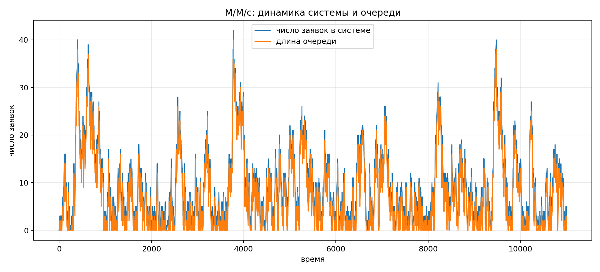
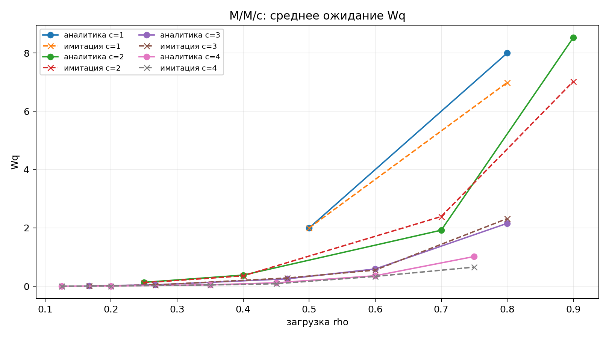
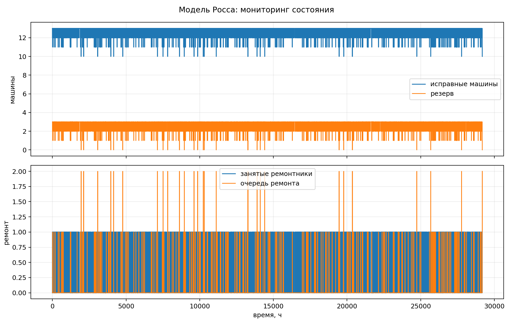
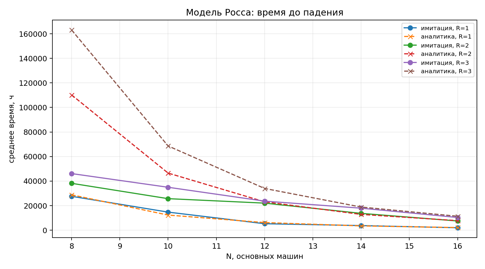
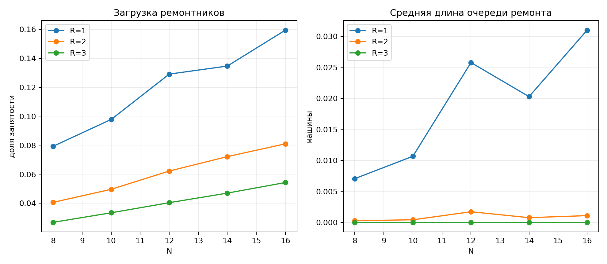

Лабораторная работа №7. Дискретно-событийное моделирование
2026-05-16
Изучить дискретно-событийное моделирование на примере системы
массового обслуживания M/M/c и модели Росса с резервом и
ремонтом, перенести расчёты в структуру DrWatson, добавить графики,
параметрические прогоны, литературный код и производные документы.
M/M/c добавить графики и сравнить с аналитическими
характеристиками.Project.toml, Manifest.toml —
Julia-окружение.src/SimulationModelingLab07.jl — функции имитации и
аналитики.scripts/mmc_literate.jl,
scripts/ross_literate.jl,
scripts/params_literate.jl — литературный код.generated/clean, generated/md,
generated/notebooks, generated/qmd —
производные literate-артефакты.data/ — CSV-таблицы с результатами.plots/ — графики.report/, presentation/,
deliverables/ — итоговые материалы.Модель M/M/c описывает очередь с пуассоновским входящим
потоком, экспоненциальным временем обслуживания и c
параллельными каналами [@kleinrock1975]. В базовом
эксперименте использованы параметры lambda = 0.9,
mu = 0.5, c = 2, что даёт загрузку
rho = 0.900.
Аналитические значения рассчитаны по формуле Эрланга C: вероятность
ожидания Pwait = 0.853, среднее число заявок в очереди
Lq = 7.674, среднее ожидание Wq = 8.526,
среднее время в системе W = 10.526.
Имитация для 10000 заявок дала вероятность ожидания
0.844, Wq = 7.905, W = 9.869,
Lq = 7.185. Отличие связано с конечной длиной прогона и
высокой загрузкой rho = 0.9, при которой дисперсия ожидания
заметна.


Модель Росса рассматривает N работающих машин,
S резервных машин и ремонтное устройство [@ross2014]. После отказа
работающей машины резерв немедленно занимает её место. Если резерв пуст,
следующий отказ приводит к падению системы. После ремонта машина
возвращается в резерв.
В реализации добавлена поддержка нескольких ремонтников. Состояние мониторинга содержит время события, число резервных машин, длину очереди ремонта, число занятых ремонтников и число исправных машин.
Базовый прогон: N = 10, S = 3, ремонтников
1. Падение произошло на времени 29185.5 ч.
Загрузка ремонтника составила 0.103, средняя длина очереди
ремонта 0.012.
Для серии прогонов при тех же параметрах среднее время до падения
равно 11718.3 ч, аналитическое ожидание —
12340.0 ч. Все 80 прогонов завершились падением, поэтому
цензурирования в базовой серии нет.

Для модели Росса решалась система линейных уравнений для средних
времен достижения поглощающего состояния. Состояние задаётся числом
исправных машин i = N, ..., N + S. При отказе происходит
переход i -> i - 1 с интенсивностью
N / failure_mean; при завершении ремонта — переход
i -> i + 1 с интенсивностью
min(R, N + S - i) / repair_mean.
Параметрические результаты:
| N | ремонтников | имитация, ч | аналитика, ч | загрузка | очередь |
|---|---|---|---|---|---|
| 8 | 1 | 27620.6 | 28839.1 | 0.079 | 0.007 |
| 8 | 2 | 38204.6 | 110206.2 | 0.041 | 0.000 |
| 8 | 3 | 46135.1 | 163096.9 | 0.027 | 0.000 |
| 10 | 1 | 14743.0 | 12340.0 | 0.098 | 0.011 |
| 10 | 2 | 25707.9 | 46540.0 | 0.050 | 0.000 |
| 10 | 3 | 34984.9 | 68640.0 | 0.033 | 0.000 |
| 12 | 1 | 5293.4 | 6221.6 | 0.129 | 0.026 |
| 12 | 2 | 22066.6 | 23142.9 | 0.062 | 0.002 |
| 12 | 3 | 23688.5 | 34014.8 | 0.040 | 0.000 |
| 14 | 1 | 3779.8 | 3513.6 | 0.135 | 0.020 |
| 14 | 2 | 13725.8 | 12882.6 | 0.072 | 0.001 |
| 14 | 3 | 17952.5 | 18868.6 | 0.047 | 0.000 |
| 16 | 1 | 2003.1 | 2156.3 | 0.159 | 0.031 |
| 16 | 2 | 7514.4 | 7788.7 | 0.081 | 0.001 |
| 16 | 3 | 10376.6 | 11367.8 | 0.054 | 0.000 |


Из каждого literate-файла сгенерированы:
generated/clean;generated/md;generated/notebooks;generated/qmd.Notebook-файлы выполнены через
scripts/execute_notebooks.py: скрипт извлекает Julia-код из
ячеек и запускает его в том же окружении проекта. Это фиксирует проверку
исполняемости notebook без зависимости от установленного
Jupyter/IJulia.
Модель M/M/c реализована как дискретно-событийная
система с календарём событий. Полученные оценки согласуются с формулами
Эрланга C, а параметрический прогон показывает резкий рост ожидания при
приближении загрузки к единице.
Модель Росса реализована для одного и нескольких ремонтников. Увеличение числа ремонтников снижает загрузку каждого ремонтника и среднюю очередь ремонта, а аналитическое решение даёт ориентир для среднего времени до падения. При фиксированном резерве увеличение числа основных машин ускоряет падение системы, потому что суммарная интенсивность отказов растёт.